COPO
COPO dessine vos pièces en vectoriel, calcule les parcours d'outils (profil, poche, V-carving, perçage) et écrit le G-code pour votre machine. Tout se passe dans le navigateur, sans installation et sans compte.
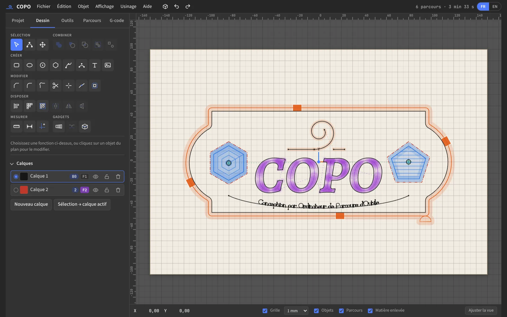
En bref
Votre premier usinage en six étapes
- Réglez le projetOnglet Projet : dimensions et matière du brut, point d'origine X0 Y0, zéro Z (dessus du brut ou table), unités et machine.
- Dessinez ou importezTracez avec les icônes de l'onglet Dessin, importez un SVG, un DXF, un PDF, un AI ou une image (icône Importer du groupe Créer, ou menu Fichier) ou écrivez un texte.
- Vérifiez vos outilsChoisissez le matériau dans l'onglet Projet, puis vérifiez dans la Bibliothèque d'outils (onglet Parcours) la vitesse, l'avance, la profondeur de passe et le pas latéral de chaque fraise.
- Créez les parcoursSélectionnez les formes sur le plan, ouvrez l'onglet Parcours, choisissez Profil, Poche, V-carve ou Perçage, réglez puis cliquez sur Calculer.
- Contrôlez en 3DLe bouton Simulation de l’usinage (onglet Parcours) ou Affichage › Aperçu 3D de l'usinage montre le brut usiné. Rejouez l'usinage pour repérer une erreur de profondeur ou d'outil.
- Enregistrez le G-codeOnglet G-code : choisissez le post-processeur, puis Enregistrer le G-code. Faites toujours un passage à vide avant d'usiner.
L'interface
La fenêtre se lit de gauche à droite, dans l'ordre du travail.
Premier lancement : un écran d'accueil propose une visite rapide (six bulles sur les zones principales), le projet d'exemple ou un projet vide. Ensuite, à la première ouverture de chaque onglet, une ou plusieurs astuces montrent l'essentiel. Passer la visite coupe aussi les astuces. Menu Aide › Visite rapide pour la revoir, Aide › Réafficher les astuces pour les remettre ; la case « Ne plus afficher au démarrage » masque l'écran d'accueil.
- Barre de menus : Fichier, Édition, Affichage, Dessin, Usinage et Aide. Le menu Dessin range ses commandes en six catégories encadrées : Groupes, Combiner, Vecteurs, Coins, Disposer et Gadgets. Le menu Aide ouvre ce mode d'emploi, permet de signaler un bug et affiche la licence. Les boutons FR / EN, tout à droite de la barre, changent la langue de l'interface ; le bouton qui les suit passe COPO en plein écran (aussi dans Affichage › Plein écran ; Échap pour en sortir).
- Onglet Dessin : en haut, une grille d'icônes regroupe toutes les fonctions de dessin (Sélection, Combiner, Créer, Modifier, Disposer, Mesurer, Gadgets), avec une infobulle et une lettre de raccourci pour chacune. Juste en dessous s'affiche ce dont vous avez besoin : les réglages de l'outil choisi (avec une aide et un petit schéma), le formulaire de la fonction cliquée (Aligner, Copie en réseau, Imbrication, Images…), ou le bloc Sélection quand un objet est sélectionné. Les icônes grisées demandent d'abord une sélection. Les calques restent en bas. Échap referme la fonction ouverte.
- Plan de travail : le brut en beige, les règles en millimètres, la grille et l'origine (flèches X et Y).
- Panneau de gauche en cinq onglets : Projet, Dessin, Relief, Parcours et G-code. Ils sont numérotés de 1 à 5 dans l’ordre habituel du travail. Dans les onglets Projet et Parcours et dans la bibliothèque d'outils, de petits schémas montrent ce que fait chaque réglage (profondeur, surépaisseur, sens de coupe, entrée de l'outil, ponts, forme de la fraise, zéro Z…) et se mettent à jour avec vos choix.
- Barre du plan, flottante en bas à gauche de la vue 2D (les coordonnées du curseur par rapport à l'origine s’affichent en haut à gauche du plan, sur fond transparent, comme les informations de la vue 3D) : deux groupes d’icônes à allumer ou éteindre (leur nom s’affiche au survol). Accroche (aimant) : grille et son pas, objets, repères, et le bouton de réglages qui ouvre les Règles d'accroche, juste au-dessus. Afficher (œil) : grille, parcours, matière enlevée, traits superposés. Un bouton allumé est entouré de bleu. En bas à droite, le bouton Recentrer recadre la vue sur le brut et le dessin ; la vue 3D a les mêmes barres, au même endroit.
- Infobulles : arrêtez la souris un quart de seconde sur un bouton ou un réglage pour voir ce qu’il fait. L’infobulle disparaît dès que la souris quitte l’élément, et s’affiche aussitôt sur le bouton voisin quand vous explorez. Dans la liste des parcours, seul le nom s’affiche : l’opération, l’outil, la durée et les éventuels avertissements (pastille !) apparaissent au survol.
Un vecteur se sélectionne en cliquant sur son trait (pas à l’intérieur) : les formes empilées restent ainsi accessibles. Une forme déjà sélectionnée peut se déplacer en la glissant depuis l’intérieur.
Clic droit (outil Sélection) : sur un objet, dans la vue 2D comme dans la vue 3D, il le sélectionne et ouvre un menu à côté du pointeur. Sur un vecteur : Usiner (Profil, Poche, V-carve, Perçage), Dupliquer, Grouper, Souder, Contour décalé…, Miroir…, Rotation…, Centrer sur le brut, Créer un relief (Dôme, Extrusion), Mettre sur le calque et Supprimer. Sur une image : vectoriser, transformer en relief, ajuster, centrer, ordre d’empilement, verrouiller, supprimer. Sur un relief : parcours d’ébauche, de finition ou de profil, contour, dupliquer, ajuster, centrer, masquer, supprimer, et en 3D déplacer, tourner, redimensionner, poser au fond ou aligner sur le dessus. Dans le vide sur le plan 2D, le clic droit ferme l’outil ou les réglages en cours et désélectionne, sans menu ; dans le vide de la vue 3D : recentrer, vue de dessus, vue de face. Avec la plume ou un autre outil de tracé, le clic droit termine toujours le tracé ; en 3D, le clic droit glissé déplace toujours la vue. Dupliquer (Ctrl+D) crée la copie sur place, sélectionnée : faites-la glisser ou déplacez-la aux flèches. Les traits superposés (doublons, copies non déplacées, bords communs, imports DXF en double) sont surlignés en rose, pour les repérer d’un coup d’œil : la fraise passerait deux fois sur ces portions. Le bouton Traits superposés du groupe Afficher (ou Affichage › Afficher les traits superposés) active ou désactive ce surlignage.
Dessiner
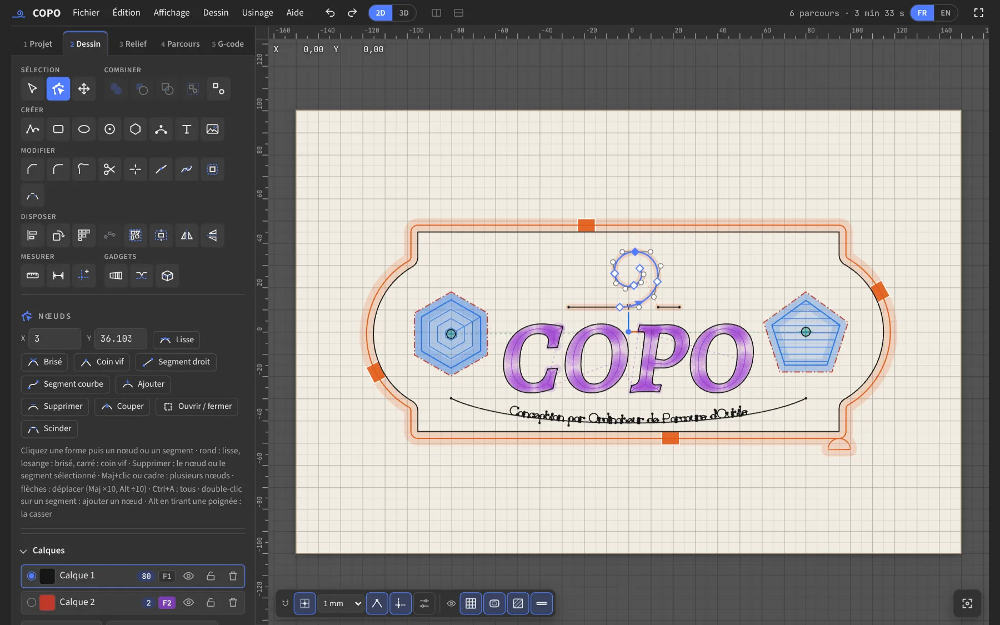
Le panneau Dessin, comme dans Aspire : quand vous choisissez un outil ou une fonction de la grille, ses réglages remplacent les icônes. La croix bleue en haut à droite, ou un clic droit dans le vide du dessin, les ferme et ramène la grille. Quand vous cliquez un objet, la grille reste et ses réglages (Sélection, image…) s'affichent dessous ; les textes d'aide s'ouvrent avec l'icône ⓘ.
Formes et tracés
- Rectangle R, avec coins carrés, en rayon externe, en rayon interne (arcs creusés) ou chanfreinés. Ellipse E (Maj : cercle) et Cercle par le centre C.
- Valeurs chiffrées (cercle, ellipse, rectangle, polygone et étoile, arc) : le panneau de l’outil affiche des champs comme dans Aspire. Cercle : centre X/Y, rayon ou diamètre. Ellipse et rectangle : point de référence (grille de 9 points), X/Y, largeur et hauteur. Polygone et étoile : centre, rayon, angle. Arc : point de départ, point d’arrivée, rayon et hauteur (flèche), liés entre eux. Tracez à la souris ou saisissez les valeurs : elles modifient la forme qui vient d’être tracée, tant qu’elle est sélectionnée ; Créer en ajoute une nouvelle.
- Polygone et étoile O : nombre de côtés ou de branches, rayon intérieur.
- Plume P (premier outil de la rangée Créer) : clic pour un point anguleux, cliquer-glisser pour un point courbe, clic sur le premier point pour fermer, double-clic pour terminer. Près de l’horizontale ou de la verticale du point précédent, le trait s’y aligne tout seul (repère « Horizontale » / « Verticale » et pointillés) ; avec Ctrl, l’angle avance par pas de 15° (0°, 45°, 90°…). La barre d’espace termine la ligne en cours et en commence une nouvelle ; le clic droit termine la ligne et quitte la plume. Le bloc Point suivant du panneau sert à créer les points au clavier : tapez X et Y (position absolue), ou un angle et une longueur L, ou dx et dy depuis le dernier point. Les six champs restent liés (en tapant l’angle et la longueur, X, Y, dx et dy se calculent) et un aperçu en pointillés montre le point. Entrée ou Ajouter le pose, Annuler retire le dernier point, Fermer et Terminer finissent le tracé.
- Arc A : par 3 points (départ, arrivée, puis le bombé) ou, en mode Centre, départ, arrivée, clic au centre, au départ puis à l’arrivée.
- Nœuds N : déplacez nœuds et poignées, double-cliquez sur un segment pour ajouter un nœud, Alt en tirant une poignée pour la casser. Trois types de nœuds : Lisse (rond, poignées alignées), Brisé (losange, deux poignées indépendantes pour un angle entre deux courbes) et Coin vif (carré, sans poignées). Plusieurs nœuds : Maj+clic pour en ajouter ou en retirer, cadre tracé dans le vide pour les prendre tous d'un coup (Maj pour compléter), Ctrl+A pour tous. Les nœuds sélectionnés se déplacent ensemble à la souris ou aux flèches (1 mm, Maj 10 mm, Alt 0,1 mm) ; Lisse, Coin vif et Suppr s'appliquent à tous. Un segment sélectionné (cliquez dessus, il passe en rouge) se supprime avec Supprimer ou Suppr : un contour fermé devient une ligne ouverte, une ligne ouverte est coupée en deux. Pour passer à une autre forme, cliquez sur son contour. Scinder (aussi dans la rangée Modifier) coupe le profil à chaque nœud : chaque segment devient un vecteur séparé.
Modifier
- Chanfrein K et Congé F sur un coin, ou sur tous les coins vifs via le bloc Coins.
- Ajuster X supprime la portion de vecteur entre deux intersections ; Couper U coupe un vecteur à l'endroit cliqué.
- Étendre les tracés (groupe Modifier) : cliquez le trait ouvert à prolonger, puis approchez la souris d’une de ses extrémités. Son prolongement s’affiche en pointillés, dans la direction du tracé, avec un rond à chaque croisement avec un autre vecteur. Cliquez un croisement : le trait est prolongé jusque-là. Vous pouvez continuer vers le croisement suivant ; Échap permet de choisir un autre trait.
- Souder, Soustraire, Intersection pour les opérations booléennes ; Joindre et Fermer pour les vecteurs ouverts, les écarts étant comblés par une ligne droite ou par une courbe lisse qui prolonge les deux tracés ; Contour décalé : sur un vecteur fermé à l'extérieur, à l'intérieur ou des deux côtés ; sur un vecteur ouvert à droite ou à gauche du tracé, ou tout autour (« Les deux » crée un contour fermé). Angles nets ou arrondis, et option pour supprimer l'original
- Lisser (adapter des courbes) (Modifier) : remplace les tracés faits de nombreux petits segments (vectorisation, DXF, import) par des arcs, des courbes de Bézier ou des lignes droites qui restent à moins de la tolérance du tracé d'origine. « Garder les coins saillants » conserve en angle vif les coins dont le changement de direction dépasse l'angle max (60° par défaut). Un aperçu en pointillés orange et le nombre de nœuds avant/après s'affichent avant d'appliquer ; décochez « Remplacer » pour garder les originaux. Arcs ou Bézier ? Dans COPO, toutes les courbes (cercles, arcs, ellipses, lettres) sont enregistrées en courbes de Bézier, comme dans un fichier SVG. Le mode Arcs repère les portions qui suivent un vrai cercle (centre et rayon constants) et les trace avec des Bézier calées sur cet arc, au plus une par quart de cercle : l'écart avec l'arc parfait est d'environ 0,03 % du rayon (moins d'un centième de millimètre pour 30 mm de rayon). Choisissez-le pour les formes mécaniques (gabarits, congés, trous) : les rayons sont vraiment constants et donnent des G2/G3 propres. Le mode Courbes de Bézier donne des courbes libres, souvent avec moins de nœuds sur les formes organiques (dessin vectorisé, volute), mais un « rond » n'y est pas forcément un cercle exact.
- Aligner et répartir : choisissez la référence dans « Aligner sur ». La sélection : un seul objet s'aligne sur le brut, plusieurs s'alignent entre eux. Le premier objet sélectionné : il ne bouge pas et les autres s'alignent sur lui ; Répartir les place à sa suite, dans l'ordre où vous les avez sélectionnés, avec l'espacement indiqué. Le brut : alignement sur les bords du brut, répartition sur toute sa largeur ou sa hauteur.
- Rotation (Disposer) : un pivot orange apparaît au centre de la sélection ; faites-le glisser sur le plan (il s'accroche aux objets, aux repères et à la grille), ou choisissez l'un des neuf points, ou tapez ses coordonnées. Rotation relative (la sélection tourne de l'angle indiqué, positif dans le sens inverse des aiguilles d'une montre) ou absolue (la sélection prend l'angle indiqué, COPO retient les rotations déjà faites). Boutons ↺ 90° et ↻ 90° pour les quarts de tour.
- Poignées : cliquez une seconde fois sur un objet déjà sélectionné. Les carrés redimensionnent (coins proportionnels si « Garder les proportions » est coché, Maj pour l'inverse, Ctrl pour avancer au millimètre ; milieux sur un seul axe), les ronds font tourner autour du pivot (Ctrl : par pas de 15°), et le pivot se déplace. Un nouveau clic les masque.
- Clic droit et double-clic : un seul clic droit sur le plan termine la ligne en cours (polyligne), annule un tracé commencé, revient à l'outil de sélection et désélectionne ; en sélection, il masque les poignées puis désélectionne. Le double-clic sur un objet, depuis la sélection ou un outil de forme (rectangle, ellipse, cercle, polygone, arc, cote, mesure), le sélectionne avec ses poignées ; un nouveau double-clic ouvre l'édition de ses nœuds (Échap ou clic droit pour en sortir).
- Miroir (groupe Disposer) : retourne la sélection par rapport au bord du dessus, de gauche, de droite ou du dessous de son cadre, horizontalement ou verticalement (autour de son centre, ou du centre du brut si la case est cochée), ou par rapport à une ligne droite sélectionnée avec les formes (Retourner sur la ligne). La case Créer une copie en miroir garde l’original en place.
- Contour (dernière icône du groupe Créer) : avec une image sélectionnée, ouvre sa vectorisation ; avec un relief sélectionné, crée le vecteur qui suit son pourtour.
- Copie en réseau en grille, circulaire ou le long d’une courbe (aussi l’icône Répéter le long d’une courbe de Disposer) : sélectionnez les objets à répéter puis, en dernier, la courbe guide (Maj+clic) ; indiquez le nombre de copies, réparties sur toute la courbe ou avec un espacement, un décalage au départ, et cochez Orienter selon la courbe pour qu’elles tournent avec elle. Miroirs, rotation, ordre de superposition.
- Position et taille exactes : bloc Sélection, avec un point de référence choisi parmi neuf (coins, milieux, centre).
Accrochage, repères et cotes
Édition › Accroche… ouvre la fenêtre Règles d'accroche : grille magnétique et son pas, repères, coins, milieux et centre du brut, rayon d'accroche (petit à grand), et accrochage aux objets avec ses six types de points (extrémités et nœuds, milieux, intersections, centres, tangentes, et sur le tracé : n’importe quel point d’une ligne ou d’une courbe, le plus proche du curseur). Les points précis (extrémité, milieu…) restent prioritaires sur « sur le tracé ». L’origine (X0 Y0) est toujours un point d’accroche. Quand vous déplacez un objet en le saisissant par un de ses points (nœud, coin, milieu, centre), c’est ce point qui s’accroche : glissez le coin d’un rectangle sur l’origine, il s’y pose exactement. Ces réglages sont mémorisés. Glissez depuis une règle pour créer un repère : les points dessinés s'y accrochent, et en déplaçant une sélection, ses bords et son centre s'alignent sur les repères (et sur le brut si cette case est cochée). Un symbole orange au curseur indique l'accroche trouvée. Affichage › Afficher la grille montre ou cache la grille du plan. L'outil Mesurer M donne une distance et l'outil Cote D pose une cote qui reste sur le plan. Une extrémité accrochée à un nœud, au milieu d'un segment ou au centre d'un arc ou d'un cercle (point plein au bout de la ligne d'attache) reste liée à l'objet : si vous le déplacez, le redimensionnez ou modifiez ses nœuds, la cote suit et sa valeur se met à jour. Une extrémité posée ailleurs (grille, intersection, point libre) reste fixe.
Calques, images et fichiers
- Calques : couleur des traits, visibilité, verrou et face usinée (F1 dessus, F2 dessous).
- Images de référence (icône Importer › Image, Fichier › Insérer une image… ou glisser-déposer) : déplacez, redimensionnez et pivotez avec les poignées pour dessiner par-dessus. Elles ne sont jamais usinées.
- Régler une image (panneau Dessin, image sélectionnée) : centre, angle, largeur, hauteur et opacité tiennent sur deux lignes ; la rangée d’icônes en dessous sert à ajuster au brut, centrer, remettre l’angle à 0°, changer l’ordre d’empilement, verrouiller et retirer l’image (le nom de chaque bouton s’affiche au survol). Les textes d’aide s’ouvrent avec l’icône ⓘ.
- Vectoriser une image (section repliable Vectoriser sous les réglages de l’image ; repliée, elle rappelle le seuil et le lissage) : COPO trace les contours de l'image. Réglez le seuil (ce qui est plus sombre devient la forme ; « Seuil automatique » le calcule pour vous) et le lissage (contours plus doux, petits détails retirés), cochez Inverser pour contourner les zones claires. L'aperçu se met à jour en direct ; Créer les contours ajoute des formes fermées et groupées à l'emplacement de l'image, prêtes pour une poche, un profil ou un V-carving. Une image nette et bien contrastée (logo, dessin au trait, silhouette) donne le meilleur résultat.
- Importer : l'icône Importer du groupe Créer ouvre un panneau à deux choix, Vectoriel (SVG, DXF, PDF, AI) et Image (modèle à décalquer ou à vectoriser).
- SVG : import en millimètres avec courbes conservées ; export du dessin entier ou de la sélection.
- PDF et AI : les tracés vectoriels de la première page sont importés à l'échelle (en mm), courbes conservées ; les zones de détourage, les images et les textes non vectorisés sont ignorés. Les fichiers Illustrator doivent avoir été enregistrés avec « Créer un fichier compatible PDF » (réglage par défaut) ; un très ancien AI (PostScript) est refusé avec un message. Vectorisez les textes avant l'export (Texte › Vectoriser).
- DXF (texte/ASCII, toutes versions) : lignes, polylignes avec arcs, cercles, arcs, ellipses, splines et blocs. L'unité du fichier est respectée (mm, cm, pouces…) ; un fichier sans unité est lu en millimètres. Les segments qui se touchent sont reliés en contours, fermés quand c'est possible, et chaque calque DXF devient un calque COPO. Les textes, cotes, hachures et objets 3D sont ignorés (le message indique lesquels).
Coins pour tenons et mortaises : dogbone et T-bone
Une fraise ronde laisse un arrondi de son rayon dans les coins : un tenon à angles vifs n'entre pas dans la mortaise. Le dégagement se dessine sur la forme, coin par coin, pour ne le mettre que là où il faut. Prenez l'outil Dégagement B (groupe Modifier), choisissez Dogbone (la fraise va en diagonale toucher le coin vif) ou T-bone (le dégagement prolonge le côté le plus long, moins visible) et le diamètre de la fraise, puis cliquez près des coins à dégager. Les mêmes réglages se trouvent dans le bloc Coins du panneau Dessin. Les coins se choisissent un par un, comme pour les chanfreins et les congés. Le dégagement ne se fait qu'entre deux segments droits ; son diamètre a 0,1 mm de plus que la fraise pour qu'elle passe sans forcer. Usinez ensuite la forme normalement (poche, profil intérieur ou extérieur) avec cette fraise.
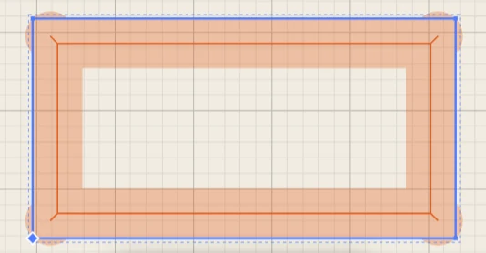
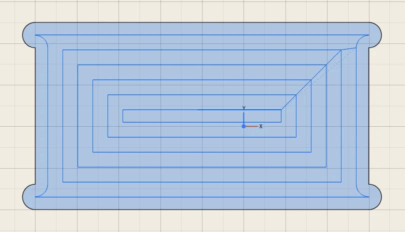
Onglet Projet
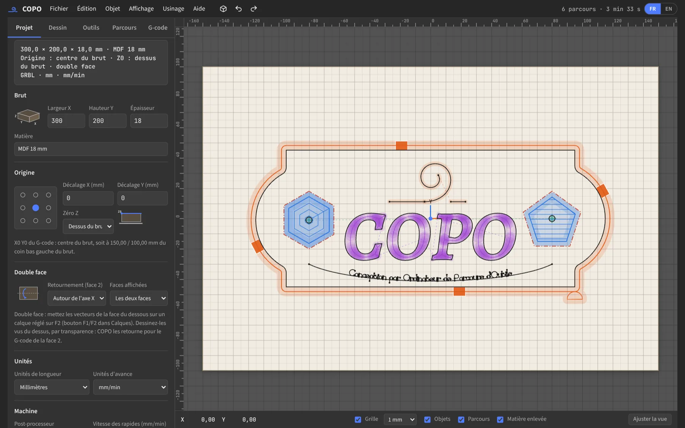
L'onglet Projet, le premier du panneau de gauche, s'ouvre tout seul quand vous créez un nouveau projet. Il contient :
- Brut : largeur X, hauteur Y, épaisseur et matière (reprise par la fiche de gamme) ;
- Origine : le point X0 Y0 sur la grille de neuf points, un décalage X/Y pour la placer hors du brut, et le zéro Z sur le dessus du brut ou sur la table ;
- Double face : l'axe de retournement et les faces affichées ;
- Unités : millimètres ou pouces, unité d'avance ;
- Axe rotatif (4ᵉ axe) : cochez Pièce cylindrique sur un axe rotatif pour usiner sur un cylindre. Le dessin se fait à plat : l’épaisseur du brut est le diamètre du cylindre, et la longueur du brut dans le sens enroulé est son tour (bouton Ajuster le brut au tour du cylindre). Choisissez l’axe du cylindre (le long de X : Y s’enroule ; le long de Y : X s’enroule) et le zéro Z (surface ou axe du cylindre). Avec un post-processeur « Wrap » ou « Rotary » (Mach2/3, CAMaster, DeskCNC, CNC Shark, WinCNC, WinPC-NC, ShopBot Indexer), la coordonnée enroulée sort en angle sur l’axe A ; COPO prévient si le post-processeur enroule l’autre axe. L’aperçu reste à plat.
- Machine : post-processeur, vitesse des rapides, avance de travail maximale (2000 mm/min par défaut : les avances des outils sont plafonnées à cette valeur), Z de sécurité et de dégagement, arcs G2/G3 et commentaires. La case Cycles de perçage G81/G82/G83 écrit les perçages en cycles : G81 simple, G82 avec temporisation au fond, G83 avec débourrage, remontée G98 au Z de dégagement. G83 ne prévoit pas de temporisation : un perçage avec débourrage et temporisation reste écrit en G0/G1. Elle est cochée d’office pour grblHAL, LinuxCNC, Mach3/4, UCCNC et MASSO, et décochée pour GRBL, Carbide Motion, Onefinity et le post-processeur personnalisé (les perçages y sont écrits en G0/G1) ; on peut toujours la changer. Si le contrôleur ne connaît pas ces cycles, il s’arrête simplement sur une erreur.
Le point d'origine doit correspondre à l'endroit où vous faites X0 Y0 sur la machine. Le brut, l'origine et la matière sont enregistrés avec le projet ; les unités et la machine restent en mémoire dans le navigateur.
Exemple : avec l'origine au coin bas gauche, un carré dont le coin est à X0 Y0 sur le plan sera usiné à partir du coin bas gauche de votre panneau. La ligne sous la grille indique où tombe X0 Y0 du G-code.
Bibliothèque d'outils
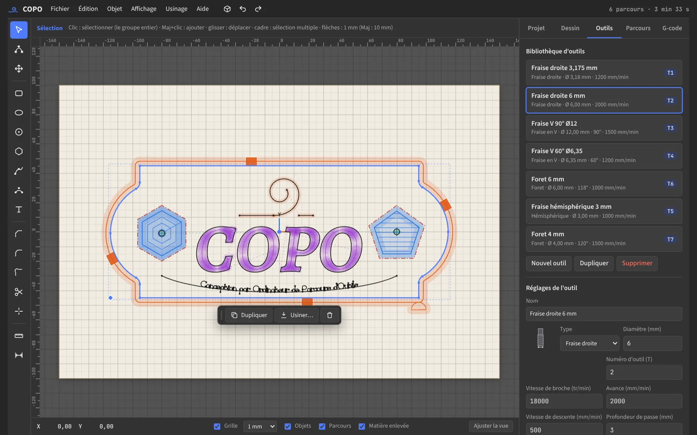
La bibliothèque s'ouvre par la carte Bibliothèque d'outils du bloc Outils de l'onglet Parcours (elle rappelle le matériau du projet), par Usinage › Bibliothèque d'outils…, et par le bouton Outil de la fenêtre d'un parcours. Inspirée de celle d'Aspire, elle est livrée remplie : outils métriques (mm) et impériaux (pouces), rangés en fraises droites, hémisphériques, en V, de gravure et forets, avec leurs réglages pour sept matériaux : bois tendre, bois dur, MDF, acrylique, PVC, aluminium et laiton. Les quatre premiers viennent d'une bibliothèque Aspire réglée sur une machine de type WorkBee ; les réglages qui y manquaient (grosses fraises), le PVC (comme l'acrylique), l'aluminium et le laiton sont estimés pour une CNC de loisir, dans le bas des plages recommandées pour les machines légères (Shapeoko, X-Carve, 3018, Stepcraft ; recoupées avec Carbide 3D et Sienci) : en aluminium, environ 0,015 mm par dent à Ø 3 et 0,025 mm à Ø 6, le laiton 20 % plus bas. Les valeurs estimées sont signalées par un bandeau orange : faites un essai et corrigez-les. Ces valeurs sont volontairement prudentes ; les fiches des fabricants, prévues pour des machines rigides, vont 3 à 5 fois plus loin.
- Matériau (en haut) : c'est le matériau du projet, aussi réglable dans l'onglet Projet (Matériau des outils). En le changeant, tous les outils du projet reprennent les réglages de ce matériau et les parcours sont recalculés. Le bouton + ajoute un matériau.
- Arbre (à gauche) : cliquez sur un dossier pour l'ouvrir, double-cliquez pour le renommer ; la recherche filtre par nom ; « utilisé » marque les outils des parcours du projet. En bas : nouvel outil, nouveau dossier, dupliquer, supprimer et revenir à la bibliothèque par défaut (deux clics). Les boutons Importer… et Exporter… sont en haut à droite.
- Réglages (à droite) : la géométrie (nom, type, diamètre, angle, pointe des fraises de gravure, nombre de dents, numéro T, notes), puis les réglages de coupe pour le matériau choisi. Le nom se met à jour seul tant que vous ne l'avez pas modifié.
| Réglage | Rôle |
|---|---|
| Type | Fraise droite, hémisphérique, en V (angle du V), de gravure conique à pointe plate (angle et diamètre de pointe), conique à bout sphérique ou foret (angle de pointe, 118° le plus souvent). |
| Fraise conique à bout sphérique | Définie comme sur sa boîte : diamètre de queue D, rayon en bout R et longueur d'usinage L. COPO en déduit l'angle de dépouille, celui du cône tangent à la bille qui atteint le diamètre D à la hauteur L : pour D 6, R 1, L 20, environ 5,99° (11,99° inclus). Les fraises de gravure et coniques sont utilisées comme des fraises en V de cet angle (V-carving, profil sur la ligne) ; la pointe arrondie ou plate n'est pas encore prise en compte dans la profondeur. |
| Diamètre | Sert au calcul des décalages et des poches. |
| Numéro d'outil (T) | Écrit dans le G-code des post-processeurs à changement d'outil (T2 M6, M6 T2). |
| Vitesse de broche | En tr/min, écrite avec M3. |
| Avance, vitesse de descente | En mm/min, pour la coupe et pour la plongée ou la rampe. |
| Profondeur de passe | Profondeur maximale par passe ; elle remplit la profondeur de passe du parcours quand vous choisissez l'outil. |
| Pas latéral | Distance entre deux passes de poche, en mm ou en % du diamètre (comme dans Aspire). |
| Nombre de dents | Nombre de tranchants de la fraise. |
| Avance par dent | Calculée : avance ÷ (vitesse de broche × nombre de dents). Saisissez-la pour recalculer l'avance. Le commentaire en dessous, sur fond orange quand les conditions ne sont pas optimales, dit si elle est faible (la fraise frotte et chauffe) ou élevée (risque de casse), par rapport aux plages pour CNC de loisir (bois et MDF, plastiques, aluminium, laiton) selon le diamètre, et prévient si l'avance dépasse l'avance maximale de la machine ; les données du fabricant priment. Pour un foret, COPO donne l'avance par tour. |
Choisir l'outil d'un parcours
Dans la fenêtre d'un parcours, le bouton Outil affiche l'outil choisi ; cliquez dessus pour ouvrir la bibliothèque, sélectionnez l'outil puis Utiliser cet outil (ou double-cliquez). Les outils qui ne conviennent pas au type de parcours sont grisés. Le parcours reprend les réglages de l'outil pour le matériau du projet, et sa profondeur de passe. Modifier un outil dans la bibliothèque met à jour les parcours qui l'utilisent.
Importer une bibliothèque Aspire
Le bouton d'import lit directement les bibliothèques d'Aspire, VCarve et Cut2D (fichier .vtdb, par exemple C:\ProgramData\Vectric\Aspire\V12.0\ToolDatabase\tools.vtdb, ou un export depuis la bibliothèque d'Aspire). Les outils, leurs dossiers et leurs réglages par matériau sont ajoutés dans un dossier « Import Aspire », pouces convertis en millimètres ; si le fichier contient plusieurs machines, COPO demande laquelle reprendre. Les matériaux absents (PVC, aluminium, laiton) sont estimés. Les outils de forme et les pointes diamant, que COPO ne sait pas encore usiner, sont ignorés. L'import accepte aussi une bibliothèque COPO exportée en .json.
Relief (modélisation)
L’onglet Relief prépare un usinage sculpté, comme la modélisation d’Aspire : chaque élément de relief est une carte des hauteurs posée dans le brut. L’onglet ouvre la vue 3D à côté du dessin (boutons 2D / 3D) ; les boutons de création indiquent leur mode d’emploi au survol.
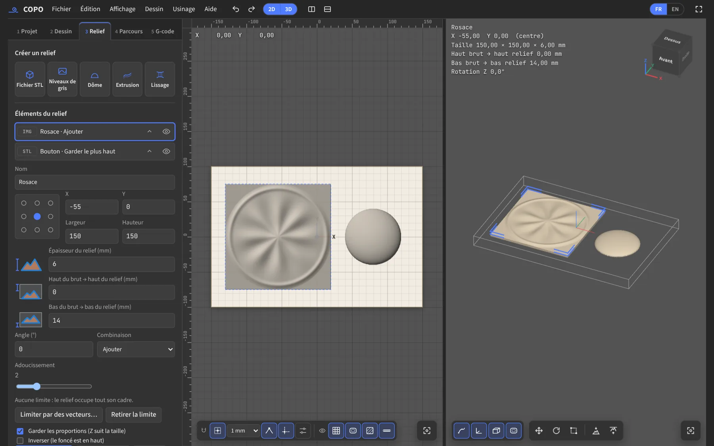
- Niveaux de gris : insérez l’image (PNG, JPG) dans l’onglet Dessin (Importer › Image), placez-la et dimensionnez-la, sélectionnez-la puis cliquez sur Niveaux de gris : l’image est transformée en relief à la même place, à la même taille et au même angle, et elle quitte la vue 2D. Le relief s’affiche ombré sur le plan et se manipule comme un objet. Le clair est en haut, le foncé en bas (case Inverser pour l’inverse). Un fond transparent compte comme du noir pour les hauteurs, mais il n’est pas usiné : sans limite sélectionnée, l’usinage reste dans la partie opaque de l’image.
- Modèle 3D (STL binaire ou texte) : le modèle est vu de dessus et projeté en hauteurs, à sa taille réelle : il n’est jamais réduit, même s’il dépasse le brut. Dans ce cas, un message et le résumé du panneau (en rouge) le signalent : agrandissez le brut dans l’onglet Projet, ou réduisez le modèle vous-même. Si le modèle arrive couché ou à l’envers, Angle X et Angle Y le basculent (180° sur X pour le retourner, ±90° pour le relever), Angle Z le fait tourner à plat (seul l’angle Z existe pour les autres reliefs). Les contre-dépouilles sont usinées telles que vues d’en haut. Aussi depuis Fichier › Importer un STL (relief)….
- Réglages de chaque élément : position et taille comme pour un objet (point de référence parmi neuf, X, Y, largeur, hauteur), épaisseur du relief, haut du brut → haut du relief et bas du brut → bas du relief (modifier l’un recalcule l’autre : leur somme plus l’épaisseur fait l’épaisseur du brut), angle, adoucissement et combinaison avec les éléments précédents : ajouter, soustraire, garder le plus haut ou le plus bas, ou mélanger : là où les reliefs se chevauchent, leurs hauteurs font une moyenne, fondue vers les bords de l’élément, sans s’additionner ni se soustraire. « Garder les proportions » fait suivre l’épaisseur quand on change la taille. Pour supprimer un élément, cliquez la corbeille sur sa ligne dans la liste. Quand un relief est sélectionné, ses réglages prennent la place des boutons de création ; la croix bleue, ou un clic droit dans le vide du dessin, les referme.
- Limiter par des vecteurs : cliquez sur Limiter par des vecteurs…, puis choisissez sur le plan un ou plusieurs vecteurs fermés et cliquez sur Valider la limite. Le relief n’existe qu’à l’intérieur de ces vecteurs (une forme dans une autre fait un trou) ; en dehors il n’y a pas de relief. La limite suit les vecteurs si vous les modifiez ; Retirer la limite rend tout le cadre au relief.
- Créer le contour : avec un relief sélectionné, ce bouton crée un vecteur fermé qui suit son pourtour vu de dessus (STL, image, dôme, lissage…), en tenant compte de sa rotation et de sa limite. Il suffit ensuite de lui appliquer un parcours Profil à l’extérieur pour détourer la pièce, ou de le décaler avec Contour décalé.
- Détourer un relief sans dessiner son contour : dans un parcours Profil, cliquez directement le relief, sur le plan 2D ou dans la vue 3D. Son contour s’affiche en pointillés bleus et le bouton devient Calculer autour du relief. La profondeur se règle toute seule sur le bas du relief (haut du brut → haut du relief + épaisseur du relief, sans dépasser l’épaisseur du brut) ; vous pouvez la modifier. Le parcours suit le contour du relief et se recalcule quand vous le déplacez ou le modifiez (mettez-le à jour). Recliquez le relief pour le retirer ; vous pouvez aussi ajouter des vecteurs au même parcours.
- Sur le plan, un relief (STL, niveaux de gris, dôme, extrusion ou lissage) se manipule comme un objet, avec l’outil Sélection : un premier clic le sélectionne et ouvre ses réglages de position dans l’onglet Relief, et vous pouvez le glisser pour le déplacer ; un deuxième clic affiche les poignées : carrés pour redimensionner (coins : proportions gardées, Maj pour déformer ; côtés : une seule dimension), ronds pour tourner (Ctrl : par 15°) ; Ctrl redimensionne au millimètre. Suppr le retire. Un clic droit sur un relief, sur le plan ou dans la vue 3D, ouvre son menu (parcours, contour, dupliquer, supprimer…).
- Affichage : en 2D, tous les reliefs (STL, niveaux de gris, dômes, extrusions et lissages) s’affichent ombrés sous le dessin ; tout le relief se voit dans la vue 3D. Le résumé indique la profondeur du point le plus bas et prévient s’il dépasse l’épaisseur du brut. Un relief qui déborde du brut (après avoir réduit le brut, par exemple) reste affiché en entier, en 2D comme en 3D, mais seule la partie dans le brut sera usinée.
Les données du relief sont gardées dans le navigateur et enregistrées dans le fichier .copo : hauteurs de chaque relief, images, et maillage complet des modèles STL. Un projet envoyé à quelqu’un s’ouvre donc tel quel sur un autre ordinateur, sans le fichier STL d’origine, et on peut encore y changer l’orientation du modèle.
Formes créées à partir du dessin
Sélectionnez des vecteurs sur le plan, puis cliquez sur l’un des trois boutons de Créer à partir du dessin. La forme est copiée dans le relief : modifier le dessin ensuite ne la change pas.
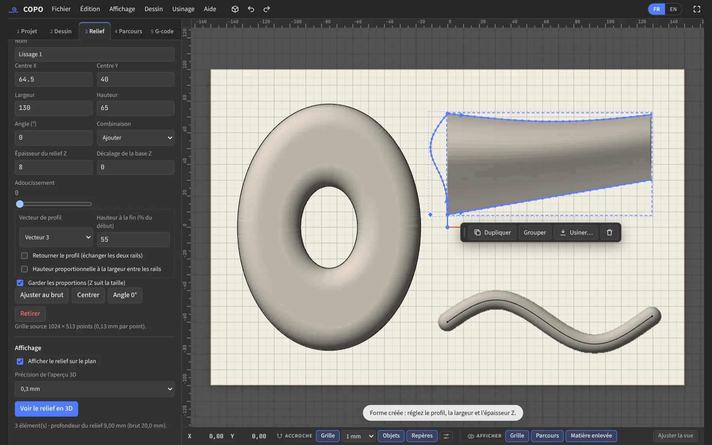
- Dôme (une ou plusieurs formes fermées ; les formes intérieures font des trous) : la hauteur monte depuis le bord. Largeur du bord = 0 bombe jusqu’au centre (arête au milieu des formes allongées, comme dans Aspire) ; une valeur donne un arrondi de cette largeur puis un plateau.
- Extrusion (un ou plusieurs vecteurs, ouverts ou fermés) : une moulure de la largeur choisie suit le tracé, extrémités arrondies.
- Lissage (deux rails + un vecteur de profil, tous ouverts) : la section dessinée passe d’un rail à l’autre, mise à l’échelle de l’écart entre les rails. Le profil est le vecteur qui relie les deux rails, sinon le dernier sélectionné (modifiable par Vecteur de profil) ; sa corde va d’un rail à l’autre et sa hauteur réelle donne l’épaisseur Z ; Retourner le profil l’inverse si besoin. Sans troisième vecteur, la section est ronde ; Hauteur à la fin fait varier la hauteur du début à la fin (crosse, manche, bord bombé) et la case Hauteur proportionnelle à la largeur l’adapte à l’écart entre les rails.
- Lissage à plusieurs profils : pour que la section change le long des rails, dessinez plusieurs profils en travers, chacun d’un rail à l’autre, à l’endroit où il doit s’appliquer (ses deux extrémités sur les rails). Sélectionnez les deux rails et tous les profils, puis Lissage : COPO reconnaît les rails (les vecteurs que touchent les profils), place chaque profil là où il croise les rails et fait passer la section progressivement de l’un au suivant, forme et hauteur comprises. Avant le premier profil et après le dernier, la section reste celle du profil le plus proche. La case Transition douce entre les profils (cochée par défaut) arrondit le passage d’une section à l’autre : pas de cassure au droit d’un profil, et la forme arrive à plat sur le premier et le dernier ; décochez-la pour une transition en ligne droite. Le panneau indique le nombre de profils et leur position en % de la longueur des rails. Pour déplacer un profil, déplacez son vecteur sur le plan et recréez le lissage.
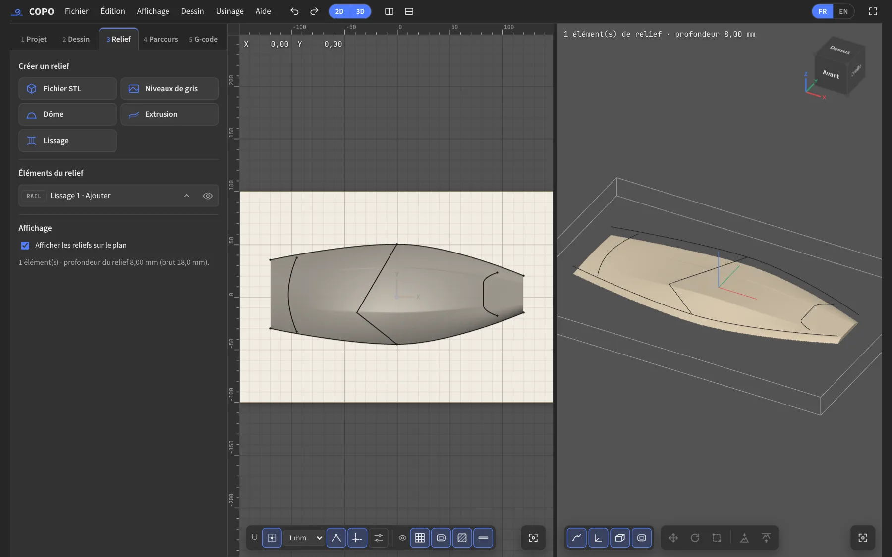
Deux rails et trois profils dessinés en travers : la section passe d’une bosse ronde basse (à gauche) à une pointe haute (au milieu) puis à une section plate (à droite), avec une transition douce. - Profil du dôme et de l’extrusion : rond, angulaire (en pointe), plat ou doucine (en S). L’épaisseur Z, le décalage de la base, la combinaison et l’adoucissement se règlent comme pour les autres éléments.
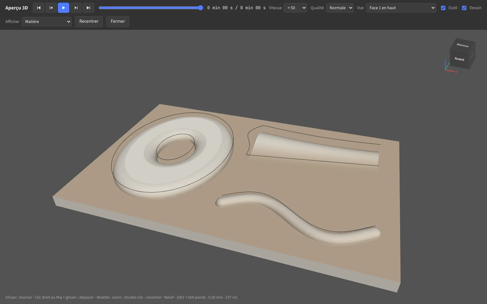
Usiner le relief
Dans l’onglet Parcours, le type Relief propose deux opérations :
- Ébauche : balayage par niveaux de Z avec une fraise droite (la plus grosse est proposée), chaque niveau descendant de la profondeur de passe, en laissant une surépaisseur (0,5 mm par défaut) pour la finition. Pas latéral par défaut : 40 % du diamètre.
- Finition : balayage parallèle qui suit la surface en tenant compte de la forme réelle de l’outil, sans jamais entamer le relief. Utilisez une fraise hémisphérique, une fraise conique à bout sphérique (définie par D, R et L) ou, pour les détails fins, une fraise de gravure à pointe plate (angle et diamètre de la pointe). Une fraise de gravure à bout rond se décrit comme une fraise conique à bout sphérique, avec les cotes de la boîte : diamètre de queue D, rayon en bout R, longueur d’usinage L ; COPO en déduit l’angle (D 6, R 1, L 20 : 5,99°). Pas latéral par défaut : 10 % du diamètre ; angle du balayage réglable et seconde passe croisée à 90° possible.
- Reliefs à usiner : cochez les éléments dont le contour limite l’usinage (tous par défaut). Les hauteurs restent celles du relief complet.
- Limite d’usinage : Contour du modèle (les reliefs cochés, sans le fond transparent des images), Contour du brut (tout le brut) ou Tracés sélectionnés (formes fermées sélectionnées sur le plan) . Outil par rapport à la limite : bord de l’outil à l’intérieur (par défaut, la fraise ne dépasse pas le tracé) ou centre de l’outil sur la limite (la fraise déborde d’un rayon, utile pour bien finir le bord d’un relief). Décalage du contour agrandit (valeur positive) ou réduit (négative) la limite.
- Stratégie : en ébauche, Niveaux Z (n’usine que sous chaque niveau, en tronçons) ou Balayage 3D (chaque ligne suit la surface sans descendre sous le niveau, moins de remontées) ; en finition, Balayage (lignes parallèles à l’angle choisi, passe croisée possible) ou Décalage (contours parallèles au bord de la limite, de l’extérieur vers l’intérieur, en avalant ou en opposition).
Les passes s’enchaînent en zigzag zone par zone et les liaisons courtes restent au ras de la surface, pour limiter les remontées et les trajets hors matière. Si le relief change après le calcul, le parcours l’indique en orange : ouvrez-le et cliquez sur Mettre à jour. Les fichiers de finition sont longs (des dizaines de milliers de lignes), comme dans tout logiciel de sculpture ; l’aperçu 3D rejoue l’ébauche puis la finition.
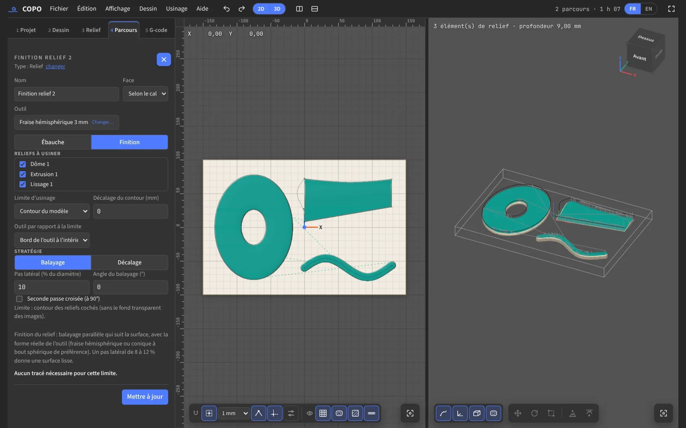
Parcours d'outils
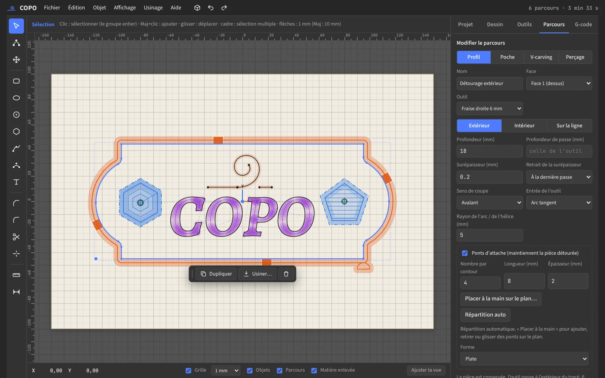
En haut de l'onglet, les quatre boutons Profil, Poche, V-carve et Perçage créent un parcours : sélectionnez les formes sur le plan (même réglages ouverts), puis cliquez sur l'opération. Ses réglages prennent la place des boutons et de la liste dans le panneau, sans rien cacher du plan ni de la 3D ; la ligne Type : Profil · changer permet de changer d'opération. Cliquer un parcours de la liste ouvre ses réglages pour le modifier. La croix bleue en haut à droite, ou un clic droit dans le vide du dessin, les ferme et ramène la liste.
Tant que les réglages du parcours sont ouverts, le reste du dessin et les autres parcours sont estompés : seuls les vecteurs sélectionnés et le parcours en cours ressortent. Tout redevient normal à la fermeture. Au bas des réglages, une ligne d'état dit ce qui sera usiné, par exemple « 3 vecteurs sélectionnés (2 fermés, 1 ouvert) » ; elle passe en rouge s'il n'y a rien de sélectionné, et prévient quand une poche, un V-carving ou un perçage ignorera des vecteurs ouverts.
Les quatre types
- Profil : Extérieur / droite (la pièce est conservée), Intérieur / gauche (le trou est évidé) ou Sur la ligne. Sur une ligne ouverte, Extérieur fait passer l'outil à droite du tracé et Intérieur à gauche, dans le sens où il a été dessiné (Dessin › Inverser le sens pour changer) ; « Sur la ligne » suit le trait ou passe à gauche ou à droite selon le réglage « Lignes ouvertes ». Sur une ligne ouverte décalée à droite ou à gauche, les entrées en rampe, en arc tangent et en arc en rampe s'appliquent aussi : l'arc entre et sort du côté de la matière enlevée.
- Poche : en anneaux parallèles au contour ou en balayage parallèle à l'angle choisi. La reprise de matière usine avec une fraise plus petite les coins qu'une grosse fraise n'a pas pu atteindre : gardez la même profondeur et placez ce parcours après la poche d'origine.
- V-carving : la fraise en V suit l'axe médian du tracé ; elle descend là où le trait est large et remonte jusqu'à la pointe des coins. Une profondeur maximale donne un fond plat. La profondeur de passe (celle de l’outil si la case reste vide) découpe la gravure en paliers, comme dans Aspire : les zones profondes sont creusées en plusieurs fois, sans changer le résultat final. La précision du calcul (0,1 mm par défaut) est l’écart entre les points qui servent à calculer l’axe médian : 0,05 mm pour les petites lettres. Une fraise de dégagement (fraise droite) peut vider les fonds plats : COPO ajoute alors, juste avant le V-carve, un parcours « dégagement » lié (il se règle depuis le V-carve et disparaît si on retire la fraise), et la fraise en V ne reprend que le bord.
- Perçage : un trou au centre de chaque forme fermée, avec débourrage et temporisation au fond si besoin (0 = sans, valeur par défaut). Avec une fraise droite, les cercles plus grands qu’elle peuvent être usinés en hélice au diamètre dessiné ; l’option n’apparaît pas avec un foret, une fraise hémisphérique ou une fraise en V. Si elle est décochée, un avertissement orange signale les cercles plus grands que la fraise, qui seront percés au diamètre de la fraise (pratique quand on dessine de grands cercles juste pour mieux voir et sélectionner les perçages). Avec un foret, chaque trou est percé au diamètre du foret ; COPO indique la longueur de la pointe à ajouter pour un trou débouchant.
- Filetage : taraudages et vis usinés à la fraise à fileter (monodent, 60°), centrés sur chaque cercle sélectionné. Réglez intérieur (taraudage) ou extérieur (vis), le pas, le diamètre nominal (0 = celui du cercle : dessinez le cercle à 8 mm pour du M8), le sens du filet et le nombre de passes radiales ; la longueur filetée est la profondeur de coupe. COPO affiche le diamètre de perçage préalable (Ø nominal − pas, par exemple Ø6,75 pour M8 × 1,25). L’outil travaille toujours en avalant, un tour d’hélice par pas, avec une entrée et une sortie tangentes en demi-cercle ; l’avance indiquée est celle du tranchant et COPO la corrige au centre de l’outil. Pour une vis, dégagez d’abord la matière autour du cylindre. Deux fraises à fileter (Ø4 et Ø8 mm) ont été ajoutées à la bibliothèque, avec des réglages estimés.
Passes, surépaisseur et sens de coupe
Prof. départ (D) et Prof. coupe (C), comme dans Aspire : l'usinage commence à la profondeur D sous la surface (par exemple au fond d'une poche déjà usinée) et descend de C à partir de là ; le fond est donc à D + C. Laissez D à 0 pour partir de la surface. Une valeur négative fait commencer au-dessus de la surface : les premières passes se font à vide, utile si le brut est plus épais que prévu ou sa surface irrégulière (D = −2 et C = 5 : départ 2 mm au-dessus, fond à 3 mm de profondeur). En V-carving, la fraise calcule le motif comme si la surface était à D, ce qui sert notamment à l'incrustation. Le petit schéma à côté des champs rappelle ce que sont D et C.
Projeter sur le relief (profil, poche, V-carving) : le parcours suit la surface de tous les reliefs visibles de l’onglet Relief au lieu du dessus plat du brut (inutile de sélectionner le relief : sélectionnez seulement les vecteurs du parcours) ; les profondeurs D et C se mesurent alors depuis le relief. La hauteur de contact tient compte de la forme de la fraise (en V, hémisphérique, droite), pour graver un motif ou une lettre sur une surface bombée. En dehors du relief, le parcours reste mesuré depuis le dessus du brut. Face 1 seulement ; si le relief change, la liste signale qu’il faut recalculer le parcours.
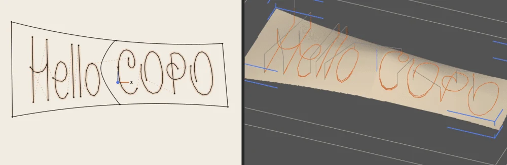
La profondeur de coupe est répartie en passes de la profondeur choisie. Une surépaisseur laisse un peu de matière sur les parois pendant l'ébauche ; elle est retirée à la dernière passe ou par une passe de finition sur toute la hauteur. Le sens de coupe est avalant ou en opposition.
Entrée de l'outil
| Entrée | Comportement |
|---|---|
| Rampe aller-retour | L'outil descend en avançant, revient au départ à pleine profondeur puis fait le tour. Chaque passe commence et finit au même point. Réglage par défaut. |
| Rampe continue | L'outil descend en avançant et enchaîne le tour ; la portion de rampe est recoupée à la fin. |
| Arc tangent, arc en rampe | Entrée et sortie en arc sur le contour, pour éviter une marque sur la paroi finie. |
| Hélice | L'outil descend en spirale, idéal pour les poches et les trous. |
| Plongée droite | Descente verticale, pour les fraises qui coupent en bout ou le V-carving. |
Ponts d'attache
Les ponts maintiennent une pièce détourée jusqu'à la fin. Réglez leur nombre par contour, leur longueur et leur épaisseur, plats ou triangulaires (plus faciles à casser). Placer à la main sur le plan… permet d'ajouter un pont d'un clic sur le parcours, de le glisser ou de le retirer.
Texte et V-carving
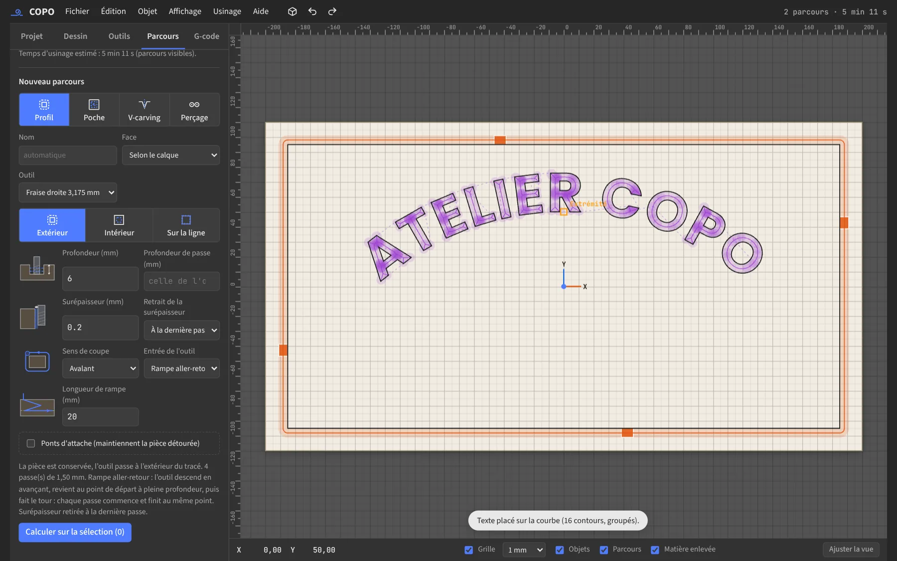
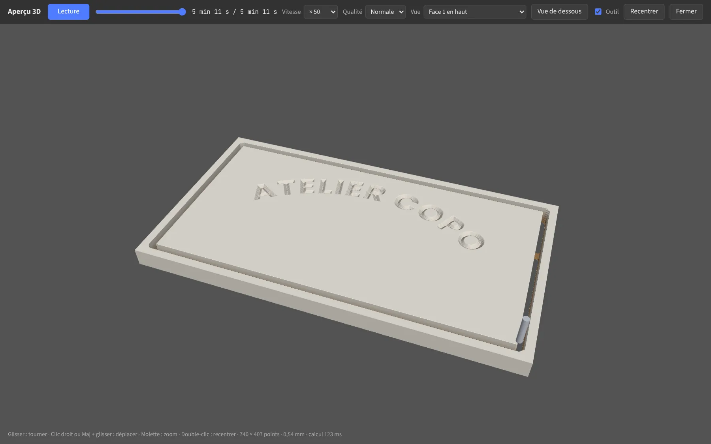
Choisissez une police dans la liste du bloc Texte : polices installées (Chrome et Edge) ou votre dossier de polices (Fichier › Ouvrir un dossier de polices…), avec aperçu. Deux cases en haut de la liste, Polices de COPO et Polices de l'ordinateur, raccourcissent la liste ; le choix est mémorisé. Prenez l'outil Texte T et cliquez sur le plan. En placement Sur une courbe, cliquez sur un contour : le texte s'y centre, au-dessus ou en dessous, avec l'espacement voulu. En placement Entre deux courbes, cliquez la courbe du bas (la ligne de base) puis celle du haut : les lettres s’étirent pour remplir l’espace entre les deux, comme une enveloppe (deux arcs pour une enseigne bombée, par exemple). Le décalage éloigne le texte de la courbe (sur une courbe) ou garde une marge avec chacune des deux courbes (entre deux courbes). Le texte devient des vecteurs groupés, prêts pour le V-carving, la poche ou le profil.
Polices à trait unique
COPO est livré avec une soixantaine de polices à trait unique (Hershey, EMS, Cutlings, Relief SingleLine, Routed Gothic…), rangées dans le dossier fonts/trait-unique et proposées en tête de la liste des polices, avec aperçu. Chaque lettre y est un simple trait : le texte se grave en une seule passe avec un parcours Profil Sur la ligne, à la fraise en V ou avec une petite fraise droite. C'est le plus rapide pour les numéros de pièce, les plaques et les repères. Quand la sélection ne contient que des traits ouverts, Usiner… propose directement ce profil. Le catalogue fonts/apercu-polices.html (lien « Voir le catalogue des polices à trait unique » dans le bloc Texte) les montre toutes avec un aperçu de votre texte. Vous pouvez aussi ajouter vos propres polices SVG avec Ajouter des polices….
Polices décoratives
Neuf familles de polices décoratives sont aussi fournies, dans le dossier fonts/decoratives, et proposées dans la section Polices décoratives (fournies avec COPO) de la liste : URW Chancery (chancelière italique), Alegreya (romaine et italique), Cinzel Decorative (capitales ornées, 3 graisses), Pirata One (gothique), Chicle, Comic Neue (6 styles), Protest Riot, Great Vibes (anglaise) et Smokum (western). Ce sont des polices à contours : usinez-les en V-carving, en poche ou en profil. Pour les scriptes fines comme Great Vibes, choisissez une hauteur de texte suffisante (20 mm et plus) pour que la fraise passe dans les déliés. La case Polices de COPO les masque avec les polices à trait unique. Licences : SIL Open Font License pour la plupart, Apache 2.0 pour Smokum, AGPL 3 avec exception pour URW Chancery (voir fonts/decoratives/LICENCES.txt).
Lutherie : touche et incrustation
Touche de guitare
Gadgets › Touche de guitare (ou Dessin › Touche de guitare…) dessine la touche, le sillet à gauche, centrée sur le brut. Réglez le diapason, le nombre de frettes, la largeur au sillet et la seconde largeur, à la 12e case ou au bout du diapason, le dépassement après la dernière frette, les cases avec un repère et un double repère (listes de numéros) et le diamètre des repères. Le trait du diapason (case cochée par défaut) trace l'axe du sillet jusqu'au chevalet, avec un repère à chaque bout, pour placer le chevalet. Avec la case Frette zéro, une frette 0 est tracée à l'origine du diapason (avec la même distance au bord que les autres) et la touche commence avant elle, à la distance réglée dans Début de touche → frette zéro ; la largeur « au sillet » est alors celle de la frette zéro. La distance frettes – bord arrête les traits de frettes avant le bord de la touche (0 = frettes traversantes). L'aperçu se met à jour en direct. La fenêtre s'ouvre à côté du panneau de gauche, comme les réglages des parcours, et se déplace par son titre.
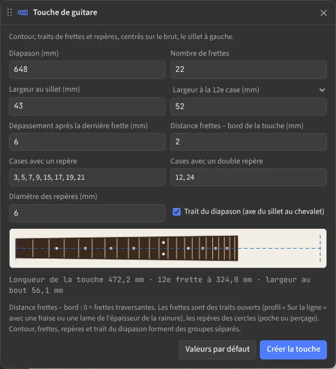
Position des frettes
COPO utilise la formule exacte du tempérament égal, celle des calculateurs de frettes de référence :
dn = L − L / 2n/12 soit dn = L × (1 − 2−n/12)
où L est le diapason, n le numéro de la frette et dn la distance du sillet à la frette. Chaque frette raccourcit la corde d'un demi-ton, d'un facteur 21/12 ≈ 1,05946 ; la 12e frette tombe exactement au milieu du diapason. La « règle du 17,817 » donne le même résultat ; l'ancienne règle du 18, moins juste, n'est pas utilisée. Aucune compensation n'est appliquée aux frettes : la justesse se règle au chevalet, que l'on recule de quelques millimètres par rapport au trait du diapason.
| Frette | 1 | 5 | 7 | 12 | 22 |
|---|---|---|---|---|---|
| Distance au sillet (diapason 648 mm) | 36,37 mm | 163,51 mm | 215,64 mm | 324,00 mm | 466,16 mm |
Le résultat forme des groupes séparés : le trait du diapason (à ne pas usiner), le contour, les traits de frettes (traits ouverts, à usiner en profil Sur la ligne avec une fraise ou une lame de la largeur de la rainure) et les repères (cercles, en poche ou en perçage).
Incrustation en V (inlay)
Sélectionnez le motif (formes fermées), puis Dessin › Incrustation en V (inlay)…. Les réglages s’ouvrent dans le panneau de gauche, avec un schéma coté comme dans Aspire : a profondeur de poche, g jeu pour la colle au fond, b hauteur du mâle sous le support (il doit dépasser a − g : l’écart restant sera raboté), c débord du support, et un nom pour les parcours. Choisissez la fraise en V (bouton Bibliothèque… pour toute la bibliothèque) et, si vous voulez, une fraise de dégagement droite qui vide d’abord les fonds plats (plus rapide sur les grands motifs). Le débord c est automatique si la case reste vide ; la case Créer les parcours d’outils peut être décochée pour ne dessiner que la pièce mâle. COPO crée :
- un V-carving femelle du motif dans votre pièce ;
- la pièce mâle : le motif en miroir entouré d'un cadre, sur le calque « Incrustation · mâle », avec un V-carving qui démarre à la profondeur de la poche moins le jeu et descend de l’écart de surface. Ses parcours sont créés masqués : pour l'usiner dans le bois d'incrustation, affichez-les et masquez ceux de la femelle avant d'enregistrer le G-code.
- avec une fraise de dégagement, une poche « dégagement » avant chaque V-carving, là où le V atteindrait sa profondeur maximale.
Retournez le mâle, collez-le dans la femelle, puis rabotez ou poncez le surplus. Le réglage Profondeur de départ du V-carving est aussi disponible à la main dans le formulaire des parcours.
Inlay en poche (fraise droite)
Sélectionnez le motif (formes fermées), puis Gadgets › Inlay en poche… ou, au clic droit, Incrustation › En poche. Les réglages s’ouvrent dans le panneau de gauche. Choisissez la fraise droite (le bouton Bibliothèque… donne accès à toute la bibliothèque d’outils), le jeu pour la colle (0,1 mm par défaut) et la façon de faire la pièce mâle (case Pièce mâle sur support). Un petit schéma coté, comme dans Aspire, montre les cotes à remplir : a profondeur de poche, b hauteur du mâle (sous le support, ou épaisseur de la pièce sans support) et c débord du support (automatique si la case reste vide). La case Créer les parcours d’outils (cochée par défaut) peut être décochée pour ne créer que les contours. Pour les grandes poches, cochez Dégrossir avec une plus grosse fraise : COPO conseille ou non le dégrossissage selon la largeur de la poche et la fraise principale, et propose une fraise (du projet, sinon de la bibliothèque). La grosse fraise vide alors la poche et le fond du bouchon, puis la fraise principale ne reprend que les angles et les passages étroits (reprise de matière) : sur une poche de 60 × 40 mm, le temps est divisé par près de trois.
Une fraise droite ne fait pas d’angle plus vif que son rayon. COPO calcule donc un contour commun dont tous les angles, rentrants comme saillants, sont arrondis au moins au rayon de la fraise : la poche et la pièce rapportée s’usinent exactement sur ce tracé et s’emboîtent sans retouche. L’aperçu montre ce contour en bleu, le dessin d’origine en pointillés rouges, et la part de surface modifiée ; un avertissement signale les parties plus fines que la fraise, qui disparaissent.
- Pièce mâle sur support (case cochée, par défaut) : le motif est usiné en miroir, en relief, dans une planche épaisse, sur une hauteur b plus grande que la poche a : une fois collée, la planche reste à b − a au-dessus de la pièce, ce qui laisse la place du trait de scie. Collez la planche retournée dans la poche, puis sciez ou rabotez le surplus. Tous les morceaux du motif restent liés et se posent d’un coup.
- Pièce mâle sans support (case décochée) : le motif est découpé dans une planchette d’épaisseur b, avec des ponts d’attache. La profondeur de découpe vaut b si la case reste vide ; mettez un peu plus (b + 0,2 mm, par exemple) pour traverser franchement si votre martyr le permet. Prenez b égal à a pour une pièce à fleur, un peu plus si vous voulez poncer après collage ; COPO prévient si b est plus petit que a. Cassez les ponts, poncez, puis collez la pièce dans la poche.
Supprimer un parcours de l’inlay supprime aussi les contours qu’il avait créés (le dessin d’origine est conservé). COPO crée la poche sur le calque « Inlay poche · femelle » et la pièce rapportée à droite du motif, sur le calque « Inlay poche · mâle ». Les deux parcours sont visibles et partent dans le G-code ; masquez-en un (œil) si vous usinez les pièces séparément.
Boîte à entures
Dans le groupe Gadgets de l'onglet Dessin (ou Dessin › Boîte à entures…), ce module dessine une boîte assemblée par tenons droits, à la façon du « Box Creator » de Vectric. Réglez les dimensions extérieures (largeur X, profondeur Y, hauteur Z), l'épaisseur du matériau (celle du brut par défaut), la largeur des tenons (leur nombre, toujours impair, s'en déduit), le jeu d'assemblage (0,1 à 0,2 mm dans le bois), la fraise de découpe, l'assemblage du dessus (à entures pour une boîte fermée, par défaut, ou posé à plat pour un couvercle amovible) et les faces à usiner (Dessus, Fond de boîte, Côtés, Bouts). Les tenons sont répartis à égalité entre les coins : la zone de coin, de l'épaisseur du matériau, n'existe que là où un autre panneau s'assemble, si bien qu'une boîte ouverte garde le même pas jusqu'en haut. Les tenons peuvent être plus étroits que l'épaisseur ; COPO prévient si les creux deviennent plus étroits que la fraise. L'option Dégagements dogbone ajoute au fond de chaque creux un arc du diamètre de la fraise, pour que les tenons à angles vifs entrent.
L'aperçu montre les panneaux posés à plat. Créer la boîte les place sur le brut, espacés pour la fraise : usinez-les en profil extérieur, avec des ponts d'attache. Les volumes des panneaux s'emboîtent exactement : aucun recouvrement ni manque aux coins.
Imbrication
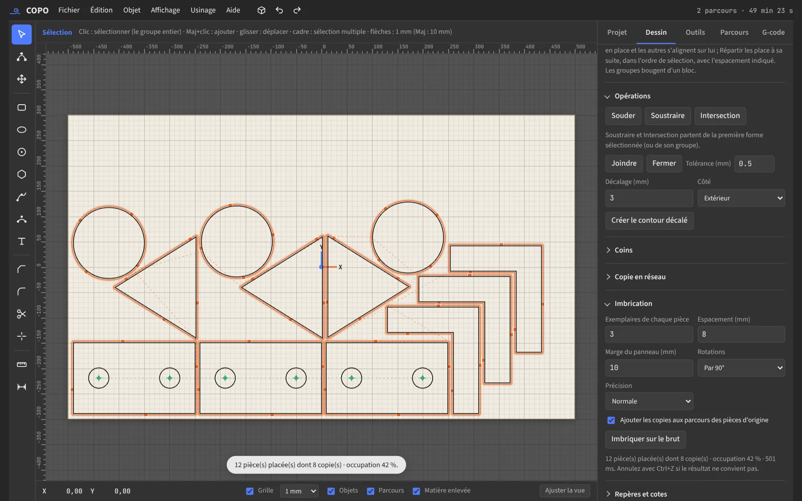
Dessin › Imbrication… ouvre le bloc dans l'onglet Dessin. Sélectionnez les pièces (sans sélection, tout le dessin est pris) et réglez le nombre d'exemplaires, l'espacement, la marge du panneau, les rotations permises et la précision. COPO place les pièces selon leur forme réelle, les plus grandes d'abord, le plus en bas à gauche possible. Un groupe ou un texte reste d'un bloc. Les pièces qui ne tiennent pas restent sélectionnées et le taux d'occupation du panneau s'affiche.
Pour du détourage, prenez un espacement au moins égal au diamètre de la fraise. Ctrl+Z annule l'imbrication si le résultat ne convient pas.
Usinage double face
- Mettez les vecteurs de la face du dessous sur un calque réglé sur F2 (bouton F1/F2 dans la liste des calques). Dessinez-les vus du dessus, par transparence.
- Choisissez le retournement : autour de l'axe X (haut ↔ bas) ou de l'axe Y (gauche ↔ droite).
- Les parcours de la face 2 sont calculés sur la géométrie retournée ; le sens de coupe est conservé.
- Dans le G-code, la face 1 est suivie d'une pause
M0: retournez la pièce, refaites X0 Y0 Z0 au même point et relancez.
L'aperçu 3D montre les deux faces ; l'option Face 2 en haut présente la pièce retournée.
Vues 2D et 3D
Les boutons 2D et 3D en haut de l’écran fonctionnent comme deux interrupteurs : 2D seule (le dessin occupe toute la zone), 3D seule (le relief), ou les deux à la fois. Quand les deux vues sont affichées, les boutons voisins les placent côte à côte ou l’une au-dessus de l’autre. L’onglet Relief affiche la vue 3D automatiquement.
La vue 3D montre le relief dans le brut (en filaire), avec le dessin et le repère. La vue est en projection orthogonale (sans perspective), pratique de face ou de côté. Glisser : tourner ; clic droit ou Maj + glisser : déplacer ; molette : zoom ; double-clic : tout le brut. En haut à droite : le cube d’orientation. En bas, des barres d’icônes comme dans la vue 2D : à gauche, afficher ou masquer le dessin, le repère, le brut et les parcours d’outils (passes à la couleur de leur type, déplacements rapides en gris) ; au centre, les outils de transformation ; à droite, recentrer sur le relief. Le brut et les parcours sont affichés à chaque ouverture de COPO. Si vous masquez les parcours, celui que vous survolez dans la liste de l’onglet Parcours, ou celui que vous êtes en train de régler, reste visible en 3D.
Les vecteurs du dessin se sélectionnent aussi dans la vue 3D : cliquez sur un trait (le curseur devient une main). La sélection est la même dans les deux vues, en bleu ; Maj + clic ajoute ou retire un vecteur, un clic dans le vide désélectionne. Pratique pour choisir le contour d’un modèle STL avant de créer son parcours.
À l’ouverture de COPO, le plan 2D et la vue 3D sont affichés côte à côte. La vue 3D s’ouvre aussi d’elle-même avec les onglets Relief et Parcours. Si vous l’avez fermée avec le bouton 3D, COPO respecte ce choix jusqu’au prochain chargement de la page.
Transformer un relief en 3D. Cliquez un élément dans la vue 3D pour le sélectionner (coins de sa boîte en surbrillance ; la sélection est la même dans la vue 2D et dans la liste). La barre du bas propose trois outils, avec les cotes affichées en haut à gauche :
- Déplacer : tirez les flèches X, Y ou Z (Ctrl : au millimètre). En Z, le haut du relief s’accroche au dessus du brut et le bas au fond ; en X et Y, les bords s’accrochent aux bords du brut.
- Tourner : tirez le cercle bleu (autour de Z) ; pour un STL, les cercles rouge et vert le font aussi pivoter autour de X et de Y (Ctrl : par 15°).
- Redimensionner : tirez un coin pour agrandir en gardant les proportions (Maj ou la case « Garder les proportions » décochée : librement), un côté pour changer seulement la largeur ou la longueur, ou le rond bleu au-dessus pour l’épaisseur : le haut monte ou descend, le bas reste en place. Ctrl fait avancer au millimètre près.
- Les deux derniers boutons posent le relief sur le fond du brut ou alignent son haut sur le dessus.
Chaque transformation s’annule avec Ctrl+Z ; le panneau du relief garde les valeurs exactes.
Aperçu 3D
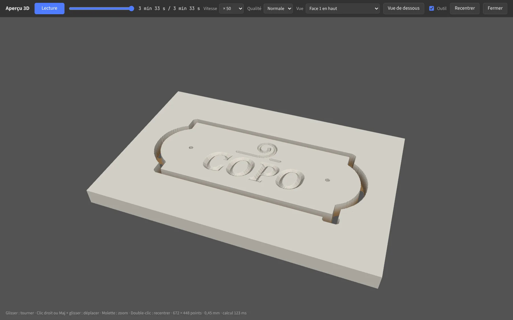
L'aperçu simule l'enlèvement de matière dans l'épaisseur réelle du brut, y compris les trous débouchants. Les boutons de lecture rejouent l'usinage : retour au début, pas en arrière, lecture / pause, pas en avant et aller à la fin ; un pas correspond à un déplacement de l'outil. Au clavier : flèches gauche et droite, Début, Fin et Espace. Le curseur permet d'aller à n'importe quel instant. Le temps écoulé et le temps total s’affichent en haut à gauche de la vue ; le bouton de recentrage est en bas à droite, comme dans les autres vues, et la croix en haut à droite ferme l’aperçu. L'aperçu demande WebGL 2 (Chrome, Edge ou Firefox récents).
Cube d’orientation (coin haut droit) : il tourne avec la vue et indique les faces (Dessus, Avant, Droite…) et les axes X, Y, Z. Cliquez une face pour la vue correspondante (Dessus = vue de plan, comme le dessin), ou un coin pour une vue isométrique. L’outil affiché reprend sa forme : fraise droite, hémisphérique, en V, foret ou fraise à fileter (dent à 60° en bout, col dégagé). Les filets d’un filetage apparaissent dans l’aperçu au fil de la dernière passe (profil ISO à 60°), dans le trou ou autour de la vis.
Relief et pièce finie : la case Relief superpose le relief dessiné (un maillage de lignes à sa hauteur réelle) pour le comparer à la matière usinée. La case Pièce finie seule cache les chutes : la matière reliée au bord du brut sans passer par une découpe sur toute l’épaisseur disparaît, et il ne reste que la ou les pièces détourées, comme sorties de la machine. Les ponts d’attache ne relient pas la pièce à la chute (il en reste un petit talon visible). S’il n’y a aucune pièce détourée, tout le brut reste affiché.
Trajectoires en 3D
La liste Afficher de la barre de l'aperçu propose Matière, Matière + trajets ou Trajets seuls. La case Dessin affiche ou masque les vecteurs du dessin, à la couleur de leur calque, sur la face tournée vers le haut : ceux de la face 1 avec la vue Face 1, ceux de la face 2 avec la vue Face 2. Les trajectoires sont tracées en lignes dans l'espace, avec la couleur du type de parcours ; les déplacements rapides (G0) sont en pointillés gris. Pendant la lecture, elles se dessinent au fur et à mesure que l'outil avance. Avec un parcours sélectionné dans la liste, la case Parcours sélectionné seul n'affiche que lui. Idéal pour vérifier les passes, les rampes, les hélices et les hauteurs de dégagement avant d'usiner.
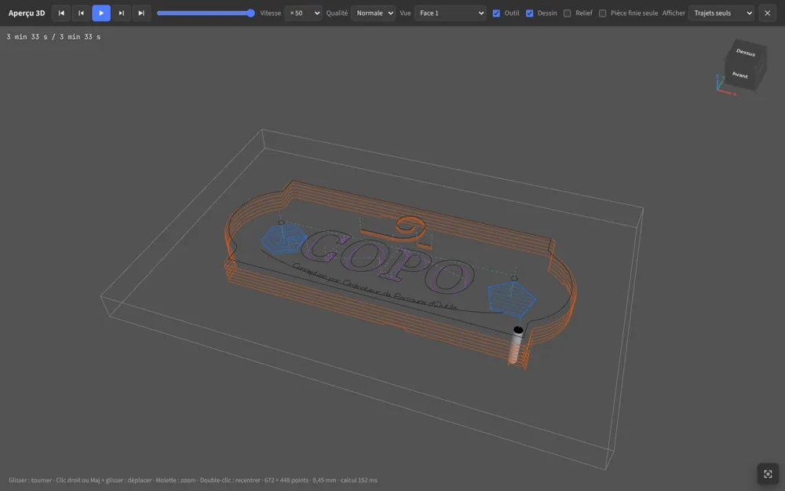
G-code
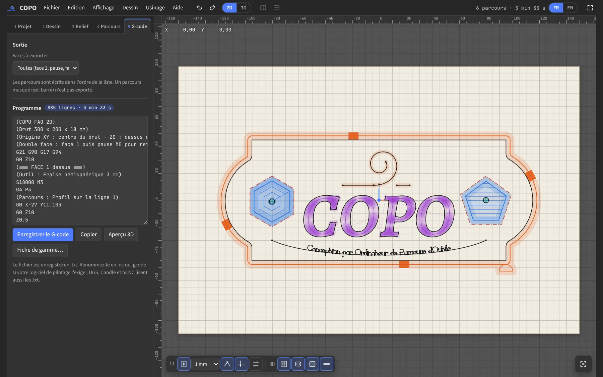
| Post-processeur | Changement d'outil |
|---|---|
| GRBL | Pause M0 entre deux outils. |
| GRBL manuel | Avant chaque outil, y compris le premier : remontée G53 G0 Z-10 (valeur réglable) et pause M0. Remontée en G53 aussi à la fin du programme. |
| Carbide Motion, Onefinity | M6 T… : le logiciel de pilotage demande de changer l'outil. |
| LinuxCNC, Mach3/4, UCCNC, MASSO | T… M6 avec le numéro d'outil, en-tête G40 G49 G80, arcs en G91.1. Fichier .ngc (LinuxCNC), .tap (Mach, UCCNC) ou .nc. |
| Personnalisé | Vous écrivez l'en-tête, le changement d'outil et la fin du programme, avec des variables : {UNITS}, {SAFEZ}, {TCZ}, {T}, {S}, {D}, {TOOL}. Extension du fichier et G91.1 au choix. |
Autres machines (format .pp). La liste propose aussi, dans un groupe à part, des machines industrielles et spéciales : Advanced Laser, Axyz, Bridgeport EZTRACK, Busellato GEN J6000, DeskCNC, Haas (avec ou sans arcs), ISEL NCP, Kuka (robot), Lasercomb, Mach2/3 ATC, Biesse Rover, Pacer, Precix, ShopBot (fraisage, tête 2, perceuses pneumatiques GC et PRS), Torchmate 2, Turbo CNC, Vision Series 3, WaterJet PRO, des machines à axe rotatif (Mach2/3 Wrap, CAMaster, CNC Shark, WinCNC, WinPC-NC, ShopBot Indexer), un traceur / découpe vinyle HPGL et un listing texte lisible du parcours (pour vérifier). Elles reprennent la logique des post-processeurs .pp d’Aspire et VCarve : chacune fixe ses unités (mm ou pouces), le format des nombres, la numérotation des lignes, l’en-tête, le changement d’outil et la fin du programme, et l’extension du fichier. Si votre machine n’y est pas et que vous avez son fichier .pp (dossier PostP d’Aspire, VCarve ou Cut2D), le bouton Importer un post-processeur (.pp)… le charge : il rejoint le groupe « Importés », est gardé dans votre navigateur et enregistré avec le projet. Les blocs courants sont gérés (en-tête, fin, changement d’outil, nouveau parcours, rapides, avances, plongées, remontées, arcs IJ ou R, arcs en hélice, temporisation, allumage et extinction d’un laser, plasma ou jet d’eau, changement d’avance), ainsi que les variables courantes : [TOOL_DIA] diamètre de la fraise, [TOOLNAME], [DATE], [TIME], dimensions du brut ([XLENGTH], [XMIN]…), liste des parcours et des outils ([TOOLPATHS_OUTPUT], [TOOLS_USED]). COPO signale les blocs qu’il ignore. Les post-processeurs qui allument l’outil à la plongée (laser, jet d’eau) demandent des parcours en « Plongée droite » : COPO le rappelle dans le bloc Machine et l’onglet G-code. Faites toujours un passage à vide avec un post-processeur que vous n’avez pas encore utilisé.
(Mettre l'outil : Fraise droite 6 mm D6 - refaire le zero Z puis reprendre)
G21 G90 G17 G94
G53 G0 Z-10
M0
S18000 M3
G4 P3
G0 X10 Y10
G0 Z10
…
M5
G53 G0 Z-10
G0 X0 Y0
M30
Le post-processeur, la vitesse des rapides (pour l'estimation du temps), le Z de sécurité, le Z de dégagement, les commentaires et les arcs G2/G3 se règlent dans l'onglet Projet, bloc Machine. Le fichier prend l'extension attendue par le post-processeur (.nc, .tap, .ngc).
Courbes et arcs G2/G3. COPO n'envoie pas les courbes de Bézier telles quelles à la machine : les parcours sont calculés en petits segments, puis, si « Arcs G2/G3 » est coché, les portions circulaires sont reconnues et écrites en vrais arcs G2/G3 (fichier plus court, mouvement plus fluide). Un cercle dessiné avec l'outil Cercle ou un tracé lissé en mode Arcs donne des arcs exacts ; une courbe libre est approchée par une suite d'arcs et de droites, dans la tolérance.
Vérifiez toujours le G-code par un passage à vide, outil au-dessus du brut, avant d'usiner.
Unités : millimètres ou pouces
Dans l'onglet Projet, bloc Unités, choisissez les Unités de longueur (millimètres ou pouces) et les Unités d'avance (mm/min, mm/s ou in/min). Le choix s'applique partout : dessin, règles, grille (1/16, 1/8, 1/4 et 1 pouce), coordonnées, cotes, outils, parcours et fiche de gamme. En pouces, une option affiche les valeurs en fractions (au 1/64) et une autre écrit le G-code en pouces (G20) pour les contrôleurs réglés ainsi.
Le projet reste enregistré en millimètres : on peut changer d'unité à tout moment sans rien déformer, et un projet s'ouvre correctement chez quelqu'un qui travaille dans l'autre unité. Le choix est gardé en mémoire dans le navigateur.
Fiche de gamme
Le bouton Fiche de gamme… de l'onglet G-code (aussi dans le menu Usinage) prépare une fiche de réglage de deux pages pour l'atelier. Indiquez le nom de la pièce, la matière et vos remarques ; la fiche contient :
- le brut, l'origine X0 Y0, le zéro Z, le retournement et le post-processeur ;
- un résumé : temps estimé, profondeur maximale, emprise usinée depuis l'origine, longueur de coupe et volume de matière enlevée ;
- la vue 2D de chaque face avec les parcours, l'origine et les cotes du brut, et deux vues dimétriques de la simulation (face 1 et face 2) ;
- l'ordre de montage des outils, puis le tableau des parcours : opération, outil, profondeur, passes, surépaisseur, entrée, ponts, avance, plongée et temps ;
- les points de vigilance détectés (usinage qui traverse le brut, détourage sans ponts, passe trop profonde, usinage hors du brut, parcours masqués) ;
- une liste de contrôle avant de lancer, une zone de remarques et des cases de visa.
Enregistrer en PDF (dans la fenêtre de la fiche, ou directement Fichier › Enregistrer la fiche de gamme en PDF sans l'ouvrir) crée un fichier PDF au format A4, découpé en pages sans couper les tableaux ni les images, prêt à imprimer ou à envoyer. Le PDF est une image de la fiche (texte non sélectionnable) ; pour un PDF avec du texte, utilisez Imprimer puis « Enregistrer au format PDF » du navigateur. Vous pouvez aussi garder le fichier HTML avec le G-code. Les réglages de la fiche sont enregistrés avec le projet.
Installer et utiliser hors ligne
- En ligne : ouvrez la page GitHub Pages du dépôt COPO. Rien à installer.
- Comme une application (Chrome, Edge, Brave, Vivaldi… sous Windows, macOS et Linux) : Aide › Installer COPO comme application… ou l’icône d’installation de la barre d’adresse. COPO s’ouvre alors dans sa propre fenêtre, avec son icône dans le menu des applications, fonctionne hors ligne une fois chargé, et un double-clic sur un fichier .copo l’ouvre directement (l’icône des fichiers dépend du système). Les mises à jour arrivent toutes seules dès qu’on est connecté. Firefox et Safari n’offrent pas cette installation : COPO y fonctionne normalement dans un onglet.
- Hors ligne : téléchargez le dossier complet de COPO (bouton « Code › Download ZIP » sur GitHub) et décompressez-le. Ouvrez
index.htmlen double-cliquant : tout est déjà dans le dossierlib(bibliothèques de calcul et polices de l'interface) et dans le dossierfonts. Rien d'autre à installer ni à télécharger. - Polices de l'interface : le dossier
lib/fontscontient les polices de COPO (Source Sans 3, JetBrains Mono, Barlow Condensed). Hors ligne, l'interface, la fiche de gamme et ce mode d'emploi gardent ainsi le même aspect. - Polices de gravure : rangez vos
.ttf,.otfou.woffdans un dossierfontsà côté de COPO.html et ouvrez-le une fois depuis le menu Fichier.
COPO fonctionne sous Windows, macOS et Linux, dans Chrome, Edge ou Firefox récents. La liste des polices installées n'est disponible que dans Chrome et Edge.
Raccourcis clavier
| Touche | Action | Touche | Action |
|---|---|---|---|
| V | Sélection | Ctrl+Z / Y | Annuler / Rétablir |
| N | Nœuds | Ctrl+S / O | Enregistrer / Ouvrir un projet |
| H ou Espace | Déplacer la vue | Ctrl+D | Dupliquer |
| R E C | Rectangle, ellipse, cercle | Ctrl+A | Tout sélectionner |
| O | Polygone et étoile | Ctrl+G | Grouper (Maj : dégrouper) |
| P A T | Plume, arc, texte | Échap / clic droit | Revenir à la sélection, désélectionner |
| K F | Chanfrein, congé | Suppr | Supprimer la sélection ou le nœud |
| X U | Ajuster, couper | Flèches | Déplacer de 1 mm (Maj : 10 mm) |
| M D | Mesurer, coter | Échap | Annuler le tracé en cours, désélectionner |
Sur Mac, Cmd remplace Ctrl.
Signaler un bug
Menu Aide › Signaler un bug… : décrivez le problème, puis cliquez sur Ouvrir le rapport sur GitHub. Le rapport arrive pré-rempli avec les informations techniques (navigateur, unités, brut, parcours, erreurs récentes). La capture du plan est copiée dans le presse-papiers : collez-la dans le rapport avec Ctrl+V. Si vous cochez « Joindre le projet », le fichier téléchargé se glisse dans le rapport. Un compte GitHub gratuit suffit. Les idées d'amélioration sont aussi les bienvenues sur github.com/gbulleryahen-hash/copo/issues.
Aide › Proposer une amélioration… ouvre la même fenêtre pour une idée : décrivez la fonction souhaitée et à quoi elle servirait ; elle arrive sur GitHub avec l’étiquette enhancement. Les deux envois indiquent le numéro de version de COPO (visible aussi dans Aide › À propos) : 1.n, où n augmente à chaque mise à jour publiée.
Licence
COPO est un logiciel libre © 2026 g.bulleryahen, distribué sous licence GNU GPL version 3. Vous pouvez l'utiliser, l'étudier, le modifier et le redistribuer, y compris pour un usage commercial. Toute version modifiée diffusée doit rester sous la même licence, avec son code source. COPO est fourni sans aucune garantie.
Bibliothèques utilisées, fournies dans le dossier lib : Clipper (Boost Software License), opentype.js (MIT), d3-delaunay et delaunator (ISC).